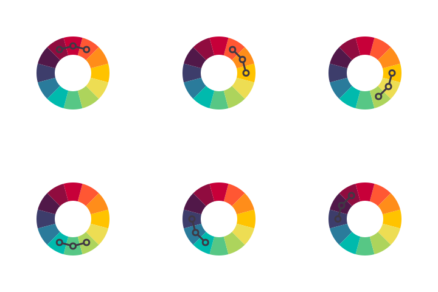
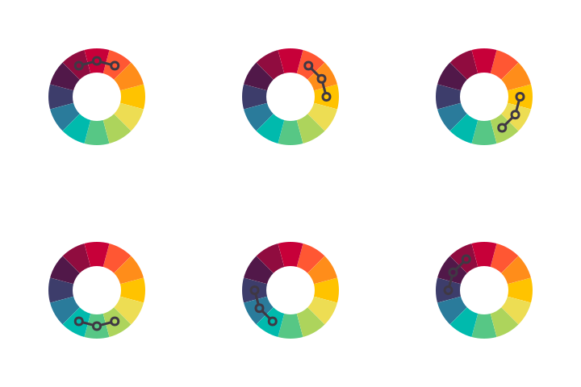

色彩调和
- 互补色
- 三色系
- 四色系
- 类似色
- 中性色
色度\色彩\色调
- 色度
- 色彩
- 色调
认识RGB
认识HSV
色彩调和
色彩调和是两种或两种以上颜色从其在色轮上的关系衍生而来的令人非常愉悦的组合。色彩调和，也称为色彩和弦，可以用来探究一种调色板，或可作为一种独立的色彩方案。
互补色
色轮上互相正对着的颜色被称为互补色。互补色有很高的对比度，配合更为中性的调色板使用时，作为重点色的效果非常好。
三色系
三合一色彩和谐由三种在色轮上互相之间距离相等的颜色组成。与互补色类似，三合一方案通常非常明亮，对比度较高，一种颜色作为主导时效果最佳。
四色系
四色色彩和谐由色轮上相隔60度的两组对比色形成。四色系对创建调色板来说是非常好的起点；使用色度、色彩和色调进行微调。
类似色
类似色色彩和谐是通过选择与所选颜色直接相邻的颜色创建而成。类似色方案在网页设计很常见，与互补色搭配使用实现对比，非常具有通用性。

中性色
与类似色色彩和谐一样，中性色方案通过选择与所选颜色两侧形成，但距离只有一半。类似色方案通常使用30度间隔的颜色，但中性色系使用15度间隔的颜色。
 

色度\色彩\色调
色度、色彩和色调是通过分别添加黑色、白色和灰色到所选颜色中而形成。它们在背景和排版等网页设计中非常有用，通常与互补色配对使用以形成对比。
色度
将不同等级的黑色加入到一种颜色中，产生该特定颜色逐渐变暗的变体，或称为“色度”。色度用于链接悬停效果或作为页脚和页眉背景效果较好。

色彩
色彩是将白色加入到一种颜色中，得到越来越浅的版本。色彩也可用于CSS悬停效果，作为模态背景效果也比较好。
色调
色调是将灰色加入到一种颜色中，根据所使用的灰色等级不同几乎可以产生无穷无尽的不同色彩。色调较少见于网页设计，在评论、引言或重点突出文字等排版元素中会比较有用。